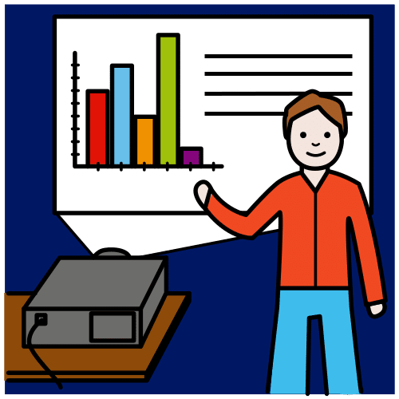
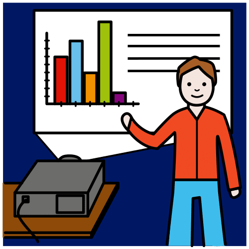

Casi hemos llegado al final de nuestra aventura. Habéis aprendido muchas cosas sobre el lenguaje HTML y sobre todo, habéis creado vuestra propia página web.
Casi hemos llegado al final de nuestra aventura. Habéis aprendido muchas cosas sobre el lenguaje HTML y sobre todo, habéis creado vuestra propia página web.
Ahora os queda presentar vuestro trabajo.
Tenéis dos opciones muy interesantes, vuestro grupo decide cómo quiere hacer la presentación.